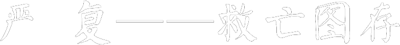

一起来看看！严复——救亡图存
严复，出生于名医世家。1866年，严复考入了家乡的马尾船政后学堂，主要学习驾驶专业。五年后以优等成绩毕业，毕业后在军舰上工作。1877年到1879年，严复等被公派到英国留学，先入普茨茅斯大学，后转到格林威治海军学院。留学期间，严复对英国的社会政治发生兴趣，涉猎了大量资产阶级政治学术理论，并且尤为赞赏达尔文的进化论观点。
1879年毕业回国，到福州船厂船政学任教习，次年调任天津北洋水师学堂总教习（教务长），1889年后捐得选用知府衔，并升为会办、总办（校长）。严复还曾担任过京师大学堂译局总办、上海复旦公学校长、安庆高等师范学堂校长，清朝学部名辞馆总编辑等职。
回国后，严复于1905年任皖江中学堂（今芜湖第一中学）的监督（即校长），积极倡导西学的启蒙教育，完成了著名的《天演论》的翻译工作。他的译著既区别于赫胥黎的原著，又不同于斯宾塞的普遍进化观。在《天演论》中，严复以“物竞天择”、“适者生存”的生物进化理论阐发其救亡图存的观点，提倡鼓民力、开民智、新民德、自强自立、号召救亡图存。译文简练，首倡“信、达、雅”的译文标准。
主办《国闻报》和《国闻汇编》。《国闻报》成为戊戌变法期间维新派在华北的重要舆论阵地。他不惜重金聘请了许多翻译家，翻译西方的政治经济学说和自然科学知识，他本人也翻译了赫胥黎的《天演论》，并在《国闻汇编》上发表，在当时起了巨大的思想启蒙作用。他的著名译著还有亚当·斯密的《原富》、斯宾塞的《群学肄言》、孟德斯鸠的《法意》等，他第一次把西方的古典经济学、政治学理论以及自然科学和哲学理论较为系统地引入中国，启蒙与教育了一代国人。
辛亥革命后，京师大学堂改名为北京大学。1912年严复受袁世凯命担任北大校长之职，这也说明严复在思想界和学术界的令人信服的显赫地位。此时严复的中西文化比较观走向成熟，开始进入自身反省阶段，趋向对传统文化的复归。他担忧中国丧失本民族的“国种特性”会“如鱼之离水而处空，如蹩跛者之挟拐以行，如短于精神者之恃鸦片为发越，此谓之失其本性，”而“失其本性未能有久存者也。”出于这样一种对中华民族前途与命运的更深一层的忧虑，严复曾经试图将北京大学的文科与经学合而为一，完全用来治旧学，“用以保持吾国四、五千载圣圣相传之纲纪彝伦道德文章于不坠。”
民国四年，严复参与袁世凯帝制运动，为筹安会之发起人，因之名声失坠，一落千丈；至1920年赴福建避冬，1921年10月27日殁于福建，终年68岁。著作有《严几道诗文钞》等。著译编为《侯官严氏丛刊》、《严译名著丛刊》。